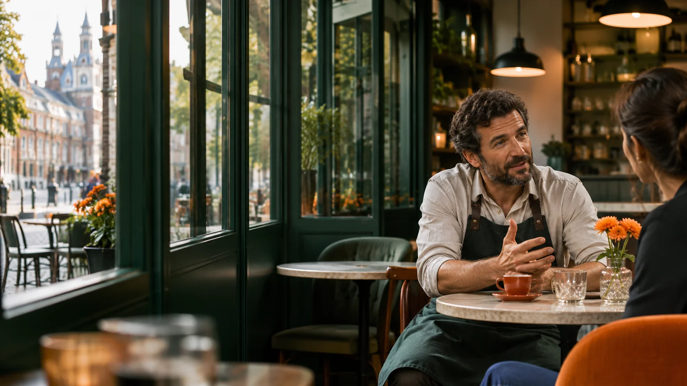

DES ENTREPRISES VIVANTES.Des histoires à faire connaître.
Vos clients sont déjà en train de chercher. Nous aidons les entreprises locales à être visibles sur Google, dans les avis et dans l'IA — pour transformer leur présence en vraies opportunités.

Chaque entreprise a sa propre histoire. Nous partons de vos besoins pour construire une présence plus forte, étape par étape.
Votre présence Google, vos avis, votre site et vos concurrents. Un regard clair pour savoir par où commencer.
Faire mon test gratuitAucun achat · Aucune obligationLes bons outils, la bonne image et une présence solide pour démarrer en confiance.
Un vrai suivi de votre présence sur Google, vos avis et les recherches locales.
Associer visibilité, réseaux sociaux et contenus pour aller chercher de nouvelles opportunités.
Un site rapide et soigné, pensé pour faciliter les appels, les prises de contact et les réservations.

Nous croyons à la force du commerce local. À celles et ceux qui ouvrent leurs portes chaque matin. Notre métier : aider les bonnes personnes à les trouver.
Savez-vous comment votre entreprise apparaît aujourd'hui ? Commencez par un premier regard sur votre présence en ligne. C'est gratuit, et sans engagement.
Faisons le point
sur votre présence.
Aucune analyse réelle ne sera lancée dans ce prototype. L'intégration SEOptimer sera ajoutée lors du développement WordPress.
Un carrousel premium prévu pour accueillir plusieurs témoignages clients, avec navigation fluide sur mobile comme sur desktop.
Du café de quartier à la concession automobile, chaque métier a ses codes. Nous prenons le temps de comprendre les vôtres.
Commerçants, indépendants, restaurants, services locaux et professionnels de l'automobile : une stratégie pensée autour de vos vrais clients.
Pas de promesses de première place sur Google. Pas de jargon inutile. Une méthode lisible, un regard humain, et des actions que vous pouvez comprendre.
Comprendre votre activité, votre quartier et ce qui compte vraiment pour vos clients.
Mettre en place les actions pertinentes sur Google, les avis, votre site et vos contenus.
Suivre les résultats, expliquer les actions réalisées et ajuster ce qui doit l'être.
Parlons de votre activité et du prochain pas. Une première conversation, sans engagement.
Lundi—vendredi
09:00—17:00